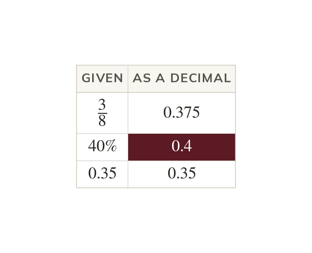
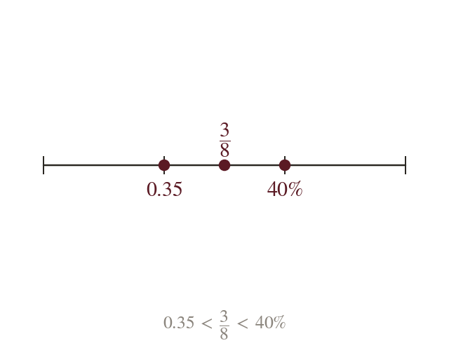
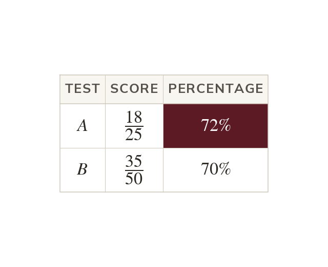
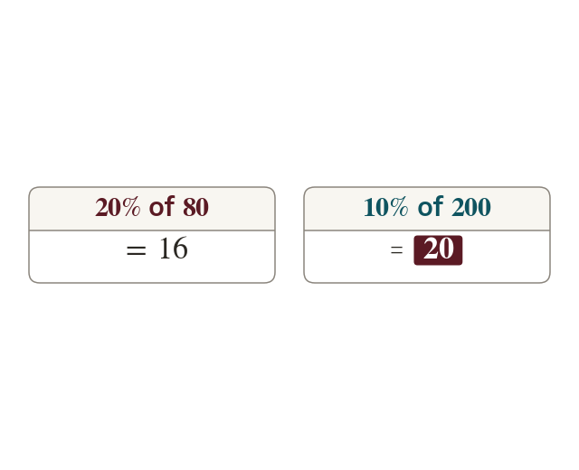

Topic 7.16 · Decimals and Rounding · Lesson 6 of 6
Comparing FDP in Context
Is of a pizza more than of it? Shops, tests and surveys mix fractions, decimals and percentages. Today you convert them to one form so they can be compared fairly.
By the end you’ll know…
Quantities written in different forms can only be compared once converted to a common form.
Decimals are usually the easiest common form, since they compare place by place.
A percentage of one amount cannot be compared with a percentage of a different amount.
The form an answer is given in should match the form the question uses.
By the end you can
G4Order a mixed set of fractions, decimals and percentages by converting to a common form.
G4Solve problems requiring conversion between fractions, decimals and percentages in context.
Work down the page at your own pace. Write every answer in your book first, then click to check it.
01
Do Now
About 5 minutes
1
Which is bigger, or ?
: is more than
2
Put and in order, smallest first.
3
Write and with denominator
and
4
Which is smaller, or ?
: is less than
Remember these?
LAST LESSONWrite as a decimal.
which is recurring.
LAST WEEKFind the midpoint of and
LAST TERMWork out
LAST YEARWork out
02
Learn
Read each card, then follow the worked examples one step at a time.

One common form
Convert quantities to one form before comparing them. Decimals are usually easiest: they compare place by place.
Quantities in different forms can only be compared once they are converted to the same form. Decimals are usually the easiest, since they compare place by place.

Ordering a mixed set
Once every value is a decimal, the order is read from the decimals. The values are then written back in their original forms.
WORKED EXAMPLE A
Put and in order, smallest first.
Write each as a decimal and
Order them
In order
WORKED EXAMPLE B
Put and in order, smallest first.
Write each as a decimal and
Order them
In order
YOUR TURN · a
Put and in order, smallest first.
YOUR TURN · b
Put and in order, largest first.
03
Check your understanding
Pick an answer. If it's wrong, the feedback tells you which mistake it was.
Which is the largest: or ?
Not quite. Make them all the same form:
Not quite. More digits doesn't mean bigger.
Yes. As percentages: and is largest.
Not quite. As percentages they are and : all different.
Which list is in order, smallest first?
Yes. As decimals:
Not quite. which is more than
Not quite. the largest.
Not quite. which is less than
What is the best way to compare and ?
Not quite. Different forms can't be compared digit by digit.
Not quite. Different forms can't be compared digit by digit.
Not quite. not Convert instead.
Yes. so is bigger.
04
Practise
mark as you go
Checkpoint. Put and in order, smallest first.Show your teacher before you go on
1
Put and in order, smallest first.
As decimals:
2
Put and in order, smallest first.
As decimals:
3
Which is largest: or ?
As decimals:
4
Put and in order, smallest first.
As decimals:
5
Put and in order, largest first.
As decimals: Order:
6
Which is smaller, or ?
and is smaller
EXT
Find a number between and Write it as a fraction.
As a fraction:
05
Learn
Read each card, then follow the worked examples one step at a time.

Comparing results
Compare scores out of different totals as percentages. So out of beats out of
Scores out of different totals are compared by converting each to a percentage. out of is which beats out of which is

Percentages of different amounts
Work out each percentage amount before comparing. of is but of is
A percentage of one amount cannot be compared with a percentage of another until both are worked out. of is but of is
WORKED EXAMPLE C
Ali scores out of and Ben scores out of Who did better?
Convert Ali's score
Convert Ben's score
Did betterAli
WORKED EXAMPLE D
Shop A takes off and shop B takes off Which price is lower?
Find of
Find of
Lower priceshop B, at
YOUR TURN · c
Which is the better score, out of or out of ?
and so out of
YOUR TURN · d
A coat costs with off, or with off. Which is cheaper?
and so the coat with off.
06
Check your understanding
Pick an answer. If it's wrong, the feedback tells you which mistake it was.
Which of these scores is the best?
Yes. As percentages: out of wins.
Not quite. but
Not quite. the lowest.
Not quite. but
Which is more, of or of ?
Not quite. Work them out: of of
Yes. of and of so of
Not quite. Work them out: and not equal.
Not quite. Use blocks: and No calculator needed.
of pupils walk to school. What percentage is this?
Not quite. not
Not quite.
Not quite. is right, but the question asks for a percentage:
Yes.
07
Practise
mark as you go
Checkpoint. In class A, of the pupils have a pet. In class B, have a pet. Which class has the greater proportion? Give your answer as a percentage.Show your teacher before you go on
1
Which is the better score, out of or out of ?
and out of
2
Shop A takes off Shop B takes off Which price is lower?
A: B: Shop A
3
In class A, of pupils like PE. In class B, do. Which class has the greater proportion?
Class B against
4
Which is more, of or of ?
of They are equal
5
Which is more, of or of ?
of So of is more
EXT
In a survey, choose tea, choose coffee and the rest choose juice. What percentage choose juice?
and
08
Exit ticket
On paper, on your own, then check
1
Why should and be converted to one form before they are ordered?
Only numbers in the same form can be compared place by place; as decimals they are and
2
Put and in order, smallest first.
3
Which is the better score, out of or out of ?
and so out of
Finished? Next lesson: 7.17.1 The Probability Scale.
Practise more
After the lesson, or whenever you want more
Dr Frost
Log in, then search for a code to practise that skill.
175dOrder a mixture of fractions, decimals and percentages.
175bCompare a given fraction and decimal using inequalities.
175cCompare a given fraction and percentage using inequalities.